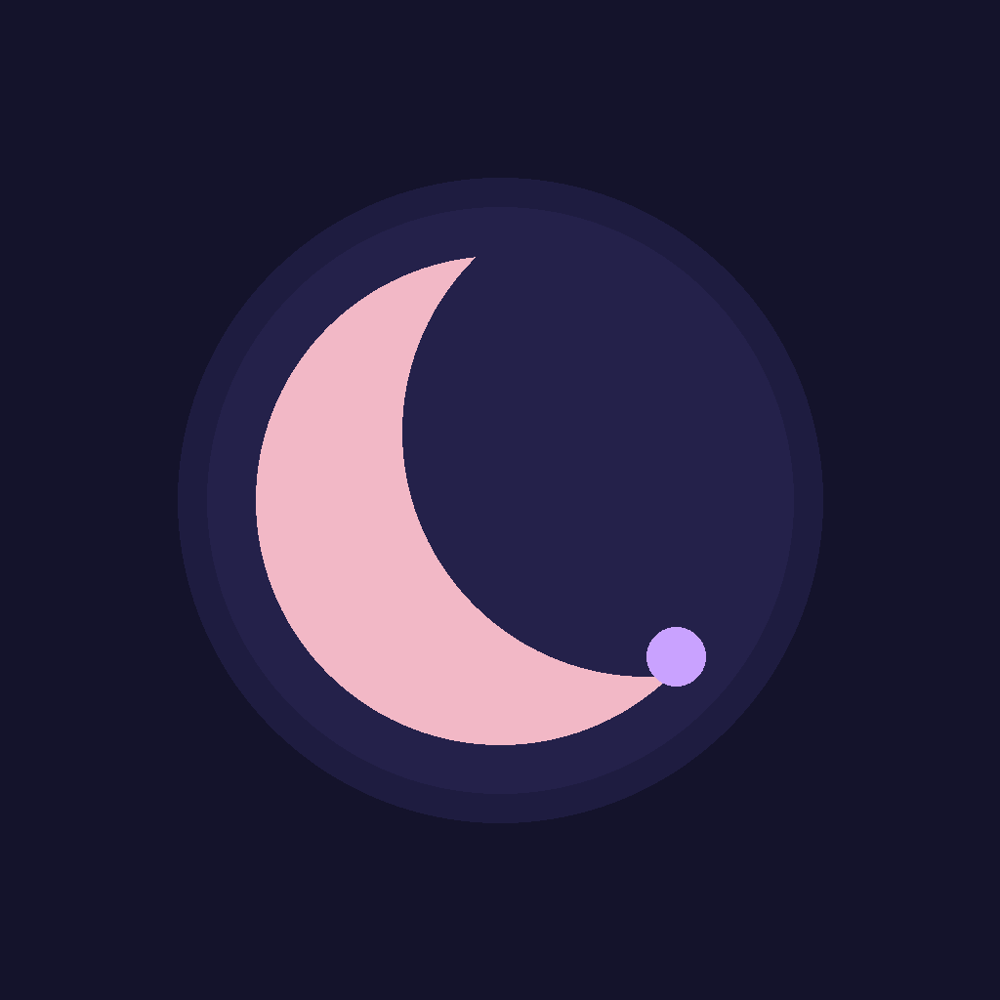

MoondayKnow where you are in your cycle.
Moonday predicts your next period and fertile window from your own cycles, and keeps everything you log on your phone.
Free, always
- Period and ovulation predictions that learn from your cycles
- A calendar with your periods, fertile window and ovulation
- A daily log for flow, symptoms, mood, sleep, energy, discharge, sex, tests, weight and temperature
- Reminders before your period and fertile window, and a daily pill reminder
- A Face ID lock and discreet reminders
- Apple Health, both ways
Moonday Plus
- Insights: cycle charts, symptoms by phase, and a one page report for your doctor
- Trying to conceive: your chance of conceiving each day
- Pregnancy: your week, due date and milestones
- Partner sharing, and an encrypted backup only you can read
- Widgets and an Apple Watch app
Every new phone gets a free week of Plus. After that it is A$2.99 a month or A$14.99 once, for life.
Moonday works in English, French, German, Spanish, Italian, Portuguese, Dutch, Japanese, Korean and Chinese. Predictions are estimates and are not a form of contraception.